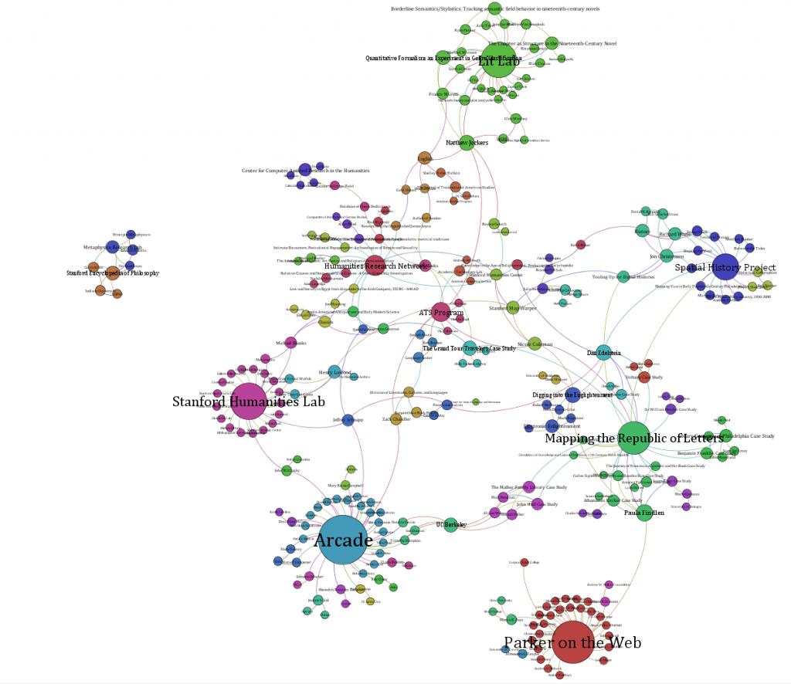

To facilitate discussion of metrics, definition and suitability, I’ve added a new page focused on visualizing and analyzing the Digital Humanities network at Stanford. I found at THATCamp and here at Stanford that this can cause agitation and consternation and so I think an open forum on developing standards and practices for visualizing digital humanities networks (whether at Stanford or elsewhere) would prove useful.

Stanford digital humanities projects and participants sorted by modularity.